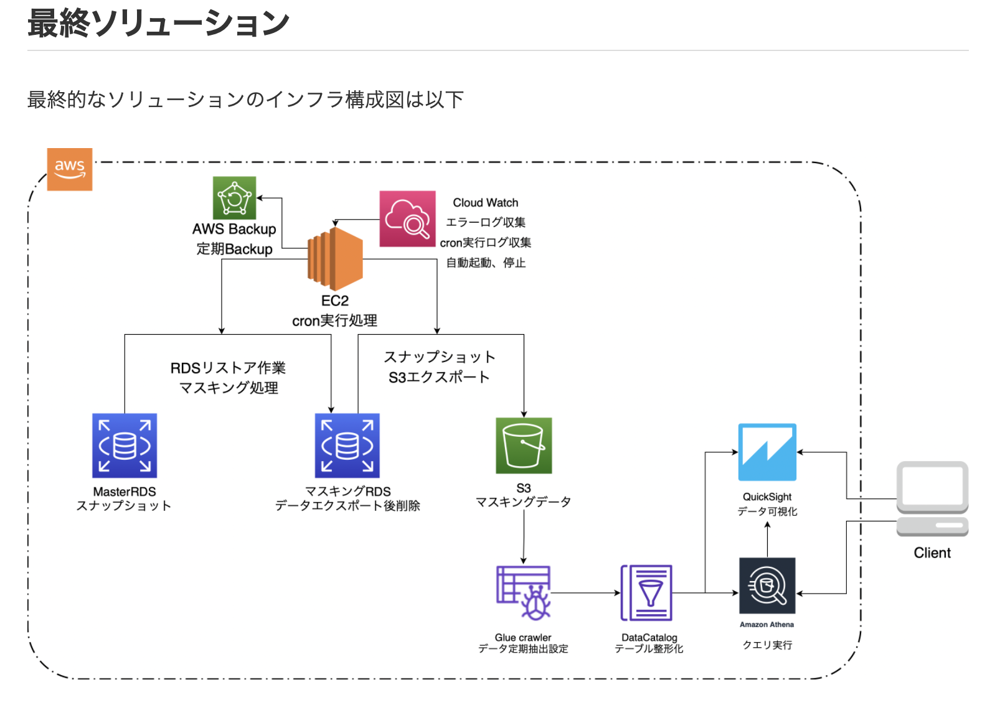

頼母木祐太 Portfolio Site
about me

パーソナル情報
1993年10月25日生まれ / 27歳
経歴
- ・2016年3月 ： 東京都市大学 工学部 エネルギー化科 卒業
-
・2016年4月 ： 株式会社マーキュリー
「若手でも挑戦できる環境を与える」という会社ポリシーに惹かれ入社を決意しました。
入社2年目でリーダー職に抜擢。
入社4年目では主任職を任せていただきました。
それに対し非常に柔軟な料金を設定可能な運用を提案し、多くの部署と交渉の上実現しました。これにより私はその年に最高評価を頂きました。
真剣に課題と向き合い、毎日毎日考えて改善策を閃きました。
常に頭を使い改善策を考える癖がこの時身につきました。 - ・2020年10月 ： 株式会社マーキュリー 退職
- ・現在転職活動中
2021年に学習したプログラミングスキル
5月16日から現在まで1日も休む事なく継続して学習を続けています
- 学習したもの
HTML / CSS / Ruby / Ruby on Rails / JavaScript / jQuery / AWS (EC2、S3、Route53、ACM) - SNS経由でエンジニアにDMを送り、実務開発に参画し、Railsアプリのサーバーサイドを開発中
※成果物については下記参照ください
どの様な業務をしたいか
人と人とのニーズを合致させ相乗効果を生み出すサービスに携わりたいです。
その為に必要な言語やスキルを常に取り入れていける環境で働きたいです。
どの様なエンジニアになりたいか
親族が経営する会社を辞めてまでIT企業を志した理由は、
「大きな変化による価値を生み出し、多くの人の役に立ちたい」からです。
1.変化を起こす
今まで当たり前と思われていた事を疑い、常に改善案を考え、とにかくどんどん実行していきたいです。
新しい事に挑戦する事は非常に刺激的ですし、そこから見えてくる新しい景色があると考えています。それにより自分自身も大きく変化していけると思います。
2.価値を生む
価値とはそのサービスや商品を支持してくれる人の数だと考えています。
私が提供するサービスにより多くの人に影響を与え、喜んで貰える事を常に意識して行動しております。
また、ITにはそれが実現可能だと思い、ITへの道を志しました。
3.影響力を持つ
私が挑戦の中で得た情報やスキルは、どんどん他者へ提供していこうと考えております。
SNSを使って情報発信したり、技術記事を発信したりと、積極的に実行していきます。それにより1人でも多くの人に影響を与える事ができ、それが僕の志す変化による価値提供に必要な条件だと考えています。
Rails
モテトーク
アプリのデモ動画
こだわりポイント
- ・完全にRubyだけを用いて制作したゲーム
- ・コードを書く前にマインドマップを作成。設計書通りに制作
- ・実際にゲームを作る事で基礎文法の知識の定着が出来たと実感
- ・「A」が出たら1or11の都合の良い方を選択する、掛け金と点数に応じた支払いロジックを搭載する等、ブラックジャックの基本ルールに準拠
- ・本ゲームを基にした初学者向けのRuby学習教材を作成中
補足資料
事前に作成したマインドマップ（クリックで拡大します）

実務経験
自社サービスモニタリング体制構築
実務ブログ記事
実務案件概要
- 案件内容
- ・データのモニタリング体制を整える
- ・実装期間：1ヶ月半
- 課題
- ・データを気軽にモニタリングできない
- ・定期的なモニタリングができていない
ソースコード
GitHub(book_share)こだわりポイント
- ・初めてRailsでCRUD処理を実装して制作したアプリ
- ・AWSにアプリをデプロイしています。AWSへのデプロイ方法をQiitaへ投稿
- →Qiita(AWS(EC2)にRailsアプリをイチから上げる方法)
- ・ログインしないと閲覧できないページやパスワードを暗号化して保存する等の処理を実装
- ・TwitterAPIと連携して、Twitterでログイン可能。その際アイコン画像を受け取り表示
- ・AmazonAPIと連携して、アプリ内で書籍検索を実装予定（現在製作中）
使用したGem
- ・omniauth-twitter：TwitterAPI使用
- ・bootstrap：レスポンシブデザイン
Others
ビジネスアイデア
事業計画提案書作成
13.taka isoが修正
主催したもくもく会の集合写真

もくもく会で登壇した動画
こだわりポイント
- ・過去4回別のもくもく会に参加し、その後もくもく会を主催する
- ・所属するオンラインサロン上で呼びかけ、会場の手配を行う
- ・3時間30分もくもく会、30分は質問タイム。活発に意見の交換を行う
- ・その後食事会も開き、メンバーの交流を深める
- ・第2回もくもく会を主催予定
→物怖じしない性格、企画力、実行力、コミュニケーション能力があります
14.takecoが修正
投稿したQiita記事の一部

こだわりポイント
- ・RailsアプリをAWSへデプロイする方法を画像付きで丁寧に解説
- ・6記事、10章に及ぶ記事を作成
- ・今後も勉強した内容を積極的にアウトプットしていく
→新しい知識をインプットしアウトプットする事を常に意識しています
15.TantaーOjが修正
2018年10月〜2019年5月まで投稿していたYouTube動画
16.tattu501が修正
- ・奈良県には世界中から観光客が来るが、観光サイトは画像情報がほとんどで情報が薄い。グローバルメディアで動画で奈良県を紹介するチャンネルを作ろう！とスタート
- ・本業の繁忙期とロケの過酷さが重なり4ヶ月で断念
17.yamken314が修正
- ・パソコン教室は都心に高い賃料と人件費を払って運営されている。今後はオンラインで学習する人が増加すると思われるので、得意なExcelを解説するチャンネルを作ろう！とスタート
- ・編集に凝りだし動画一本Upする為に膨大な時間を要し、本業に影響が出始めたので4ヶ月で断念
→面白そうと思ったら速攻で実行してみる行動力、やりながら考える思考力があります。